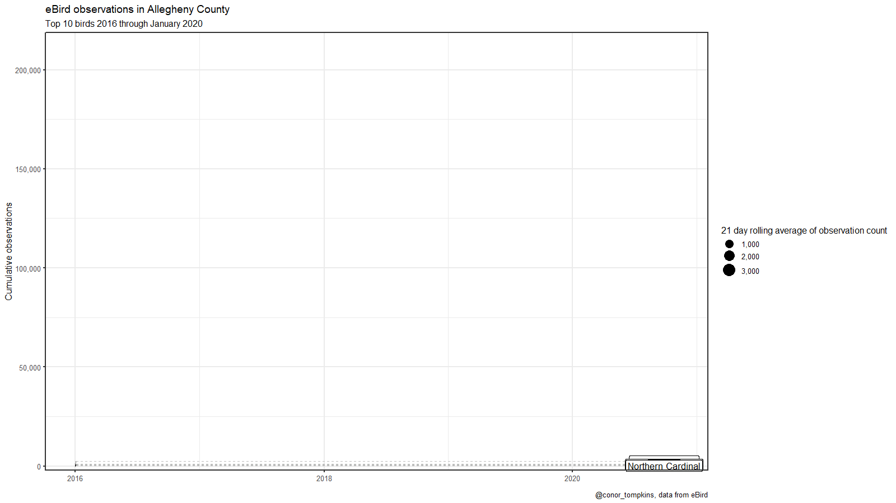

This will be a quick post on cumulative bird observations in Allegheny County. Cumulative graphs show overall trends, seasonality, and quirks in how the data was recorded. They are also fun to turn into animated gifs with gganimate.
Load the relevant libraries:
library(tidyverse)
library(lubridate)
library(tidyquant)
library(janitor)
library(hrbrthemes)
library(vroom)
library(ggrepel)
library(gganimate)
set.seed(1234)
theme_set(theme_bw(base_size = 16))This reads in data from the eBird data portal:
df <- vroom("data/ebd_US-PA-003_201001_202003_relFeb-2020.zip", delim = "\t") %>%
clean_names() %>%
mutate_at(vars(observer_id, locality, observation_date, time_observations_started, protocol_type), str_replace_na, "NA") %>%
mutate(observation_count = as.numeric(str_replace(observation_count, "X", as.character(NA))),
observation_event_id = str_c(observer_id, locality, observation_date, time_observations_started, sep = "-"),
observation_date = ymd(observation_date)) %>%
filter(all_species_reported == 1)
glimpse(df)## Rows: 528,787
## Columns: 48
## $ global_unique_identifier <chr> "URN:CornellLabOfOrnithology:EBIRD:OBS81…
## $ last_edited_date <dttm> 2018-08-03 11:44:16, 2018-08-03 11:44:3…
## $ taxonomic_order <dbl> 493, 20638, 20638, 20638, 20638, 20638, …
## $ category <chr> "species", "species", "species", "specie…
## $ common_name <chr> "American Black Duck", "American Crow", …
## $ scientific_name <chr> "Anas rubripes", "Corvus brachyrhynchos"…
## $ subspecies_common_name <chr> NA, NA, NA, NA, NA, NA, NA, NA, NA, NA, …
## $ subspecies_scientific_name <chr> NA, NA, NA, NA, NA, NA, NA, NA, NA, NA, …
## $ observation_count <dbl> 1, 7, 3, 2, 4, 3, NA, 3, NA, NA, 6, NA, …
## $ breeding_bird_atlas_code <chr> NA, NA, NA, NA, NA, NA, NA, NA, NA, NA, …
## $ breeding_bird_atlas_category <chr> NA, NA, NA, NA, NA, NA, NA, NA, NA, NA, …
## $ age_sex <chr> NA, NA, NA, NA, NA, NA, NA, "Unknown Sex…
## $ country <chr> "United States", "United States", "Unite…
## $ country_code <chr> "US", "US", "US", "US", "US", "US", "US"…
## $ state <chr> "Pennsylvania", "Pennsylvania", "Pennsyl…
## $ state_code <chr> "US-PA", "US-PA", "US-PA", "US-PA", "US-…
## $ county <chr> "Allegheny", "Allegheny", "Allegheny", "…
## $ county_code <chr> "US-PA-003", "US-PA-003", "US-PA-003", "…
## $ iba_code <lgl> NA, NA, NA, NA, NA, NA, NA, NA, NA, NA, …
## $ bcr_code <dbl> 28, 28, 28, 28, 28, 28, 28, 28, 28, 28, …
## $ usfws_code <lgl> NA, NA, NA, NA, NA, NA, NA, NA, NA, NA, …
## $ atlas_block <lgl> NA, NA, NA, NA, NA, NA, NA, NA, NA, NA, …
## $ locality <chr> "Rachel Carson Riverfront Park", "Souths…
## $ locality_id <chr> "L2640334", "L841018", "L329082", "L6920…
## $ locality_type <chr> "H", "H", "H", "P", "P", "H", "H", "P", …
## $ latitude <dbl> 40.53731, 40.43124, 40.54348, 40.65688, …
## $ longitude <dbl> -79.79531, -79.97032, -79.90623, -80.113…
## $ observation_date <date> 2010-01-14, 2010-01-31, 2010-01-23, 201…
## $ time_observations_started <chr> "11:05:00", "16:45:00", "13:15:00", "14:…
## $ observer_id <chr> "obsr39944", "obsr197993", "obsr197993",…
## $ sampling_event_identifier <chr> "S5760087", "S5839167", "S5798726", "S58…
## $ protocol_type <chr> "Traveling", "Traveling", "Area", "Trave…
## $ protocol_code <chr> "P22", "P22", "P23", "P22", "P21", "P23"…
## $ project_code <chr> "EBIRD", "EBIRD", "EBIRD", "EBIRD", "EBI…
## $ duration_minutes <dbl> 25, 30, 90, 90, 120, 30, 35, 60, 120, NA…
## $ effort_distance_km <dbl> 0.483, 0.483, NA, 8.047, NA, NA, NA, NA,…
## $ effort_area_ha <dbl> NA, NA, 24.2811, NA, NA, 4.0469, 4.0469,…
## $ number_observers <dbl> 1, 2, 2, 1, NA, 2, 2, 1, 1, 1, 1, NA, 1,…
## $ all_species_reported <dbl> 1, 1, 1, 1, 1, 1, 1, 1, 1, 1, 1, 1, 1, 1…
## $ group_identifier <chr> NA, NA, NA, NA, NA, NA, NA, NA, NA, NA, …
## $ has_media <dbl> 0, 0, 0, 0, 0, 0, 0, 0, 0, 0, 0, 0, 0, 0…
## $ approved <dbl> 1, 1, 1, 1, 1, 1, 1, 1, 1, 1, 1, 1, 1, 1…
## $ reviewed <dbl> 0, 0, 0, 0, 0, 0, 0, 0, 0, 0, 0, 0, 0, 0…
## $ reason <lgl> NA, NA, NA, NA, NA, NA, NA, NA, NA, NA, …
## $ trip_comments <chr> NA, NA, NA, NA, NA, "Temperature 8F Wind…
## $ species_comments <chr> NA, NA, NA, NA, NA, NA, NA, NA, NA, NA, …
## $ x47 <lgl> NA, NA, NA, NA, NA, NA, NA, NA, NA, NA, …
## $ observation_event_id <chr> "obsr39944-Rachel Carson Riverfront Park…I focus on the two main ways people use the eBird app: traveling and stationary. I also filter to only observations from 2016 onwards, since that is when eBird usage became stable in the county.
df_top_protocols <- df %>%
count(protocol_type, sort = TRUE) %>%
slice(1:2)
df <- df %>%
semi_join(df_top_protocols) %>%
filter(year(observation_date) >= 2016)This identifies the top 10 birds in terms of total observations:
df_species_count <- df %>%
group_by(common_name) %>%
summarize(observation_count = sum(observation_count, na.rm = TRUE)) %>%
arrange(desc(observation_count)) %>%
slice(1:10)This code filters on the top 10 birds and caculates the cumulative number of sightings and the rolling 21 day average of sightings.
df_cumulative <- df %>%
semi_join(df_species_count, by = c("common_name")) %>%
group_by(common_name, observation_date) %>%
summarize(observation_count = sum(observation_count, na.rm = TRUE)) %>%
ungroup() %>%
arrange(common_name, observation_date) %>%
group_by(common_name) %>%
mutate(observation_count_cumulative = cumsum(observation_count)) %>%
tq_mutate(
# tq_mutate args
select = observation_count,
mutate_fun = rollapply,
# rollapply args
width = 21,
align = "right",
FUN = mean,
# mean args
na.rm = TRUE,
# tq_mutate args
col_rename = "mean_21"
)This plots the cumulative observations by bird and creates an animation with gganimate:
plot <- df_cumulative %>%
ggplot(aes(observation_date, observation_count_cumulative, group = common_name)) +
geom_line(alpha = .5) +
geom_segment(aes(xend = last(df_cumulative$observation_date) + 240, yend = observation_count_cumulative), linetype = 2, colour = 'grey') +
geom_point(aes(size = mean_21)) +
geom_label(aes(x = last(df_cumulative$observation_date) + 210, label = common_name), size = 6) +
scale_y_comma() +
scale_size_continuous("21 day rolling average of observation count", range = c(2, 10), labels = scales::comma) +
scale_x_date(limits = c(first(df_cumulative$observation_date), last(df_cumulative$observation_date) + 250)) +
labs(x = NULL,
y = "Cumulative observations",
title = "eBird observations in Allegheny County",
subtitle = "Top 10 birds 2016 through January 2020",
caption = "@conor_tompkins") +
coord_cartesian(clip = 'off') +
transition_reveal(observation_date)
plot